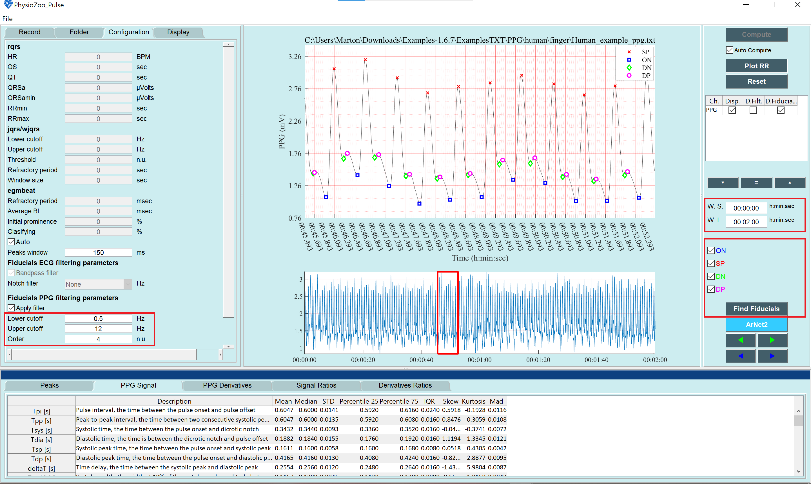
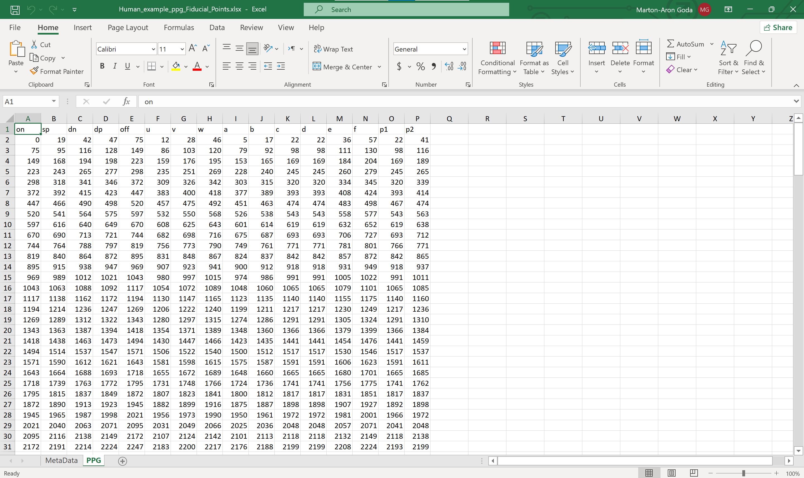

PhysioZoo PPG analysis
In this tutorial you will learn how to use PhysioZoo PPG to calculate morphological PPG biomarkers (i.e. pulse wave features) and export their values.
If you use the pyPPG resource, please cite:
Goda, M. A., Charlton, P. H., & Behar, J. A. (2023). pyPPG: A Python toolbox for comprehensive photoplethysmography signal analysis. arXiv preprint arXiv:2309.13767., (The preprint is available HERE)

For more details see the PhysioZoo PPG website and PhysioZoo PPG YouTube video
Introduction
The PPG signal is an optical measurement of the arterial pulse wave [1], i.e., the wave generated when blood is ejected from the heart, temporarily increasing arterial pressure and causing vessel expansion and contraction [2], the PPG signal is influenced by a range of physiological systems, such as: the heart, including heart rate, heart rhythm, and the nature of ejection [3]; the blood vessels, including vessel stiffness, diameter, and blood pressure; the microvasculature, including peripheral compliance and resistance [3]; the autonomic nervous system which influences heart rate variability [4]; and the respiratory system, which impacts the pulse wave through changes in intrathoracic pressure [5]. Thus, there is potential to extract much physiological information from the PPG signal.
Studying the morphological characteristics of the PPG may provide information on cardiovascular health. PhysioZoo PPG provides a framework and tools for extracting morphological biomarkers from the PPG signal.
Performing PPG morphological analysis
Start by entering the PPG interface by clicking on the ‘Pulse’ menu on the top left, then load some PPG example by clicking File -> Open data file -> Examples-1.6.7ExamplesTXTPPGhumanfingerHuman_example_ppg.txt. The program will automaticly present the PPG file you imported.
To perform the analysis, please follow the instructions:
Prefiltering the signal: On the left panel, select the “Configuration” tab. On the bottom of the tab, you will find a section labeled: Fiducials filtering parameters.
Definition of the window for anlysis: On the right panel, define the W.S. (start of the window) and the W.L. (length of the window) you want to analyze. You can analyze all of your signal or part of it. Note that if you analyze a long window,it may take some time.
Click the Find Fiducials button. The fiducial poits will be detected and highlighted while the biomarkers will be automatically engineered and displayed on the lower pannels.
Congrats! You have made your first morphological analysis with PhysioZoo PPG! The biomarkers are divided into two different categories: Duration and Amplitudes, the statistical measurments of the biomarkers will be presented in a table, in the bottom panel.
Note
For PPG anlysis 9 statistical mesurment computed over the selected window (defined by W.S. W.L.) will be presented for each biomarker namely: signal duration; average (AVG); median (MED); standard deviation (STD); lower and upper quartiles (Q1, Q3); inter-quartile range (IQR); Skewness (SKW, indicating a lack of symmetry in the distribution; Kurtosis (KUR, indicating the pointedness of a peak in the distribution curve); and the average difference between the mean and each data value (MAD)
Exporting fiducial points
You can export the fiducial points. Go to File -> Save fiducial points. The excel file contains the computed fiducial points for each lead.
Exporting morphological biomarkers
You can export the morphological biomarkers. Go to File -> Save fiducial biomarkers. The excel file contains the engineered PPG biomarkers.

References:
[1] Charlton, Peter H., et al. “Modeling arterial pulse waves in healthy aging: a database for in silico evaluation of hemodynamics and pulse wave indexes.” American Journal of Physiology-Heart and Circulatory Physiology 317.5 (2019): H1062-H1085.
[2] Alastruey, Jordi, et al. “Arterial pulse wave modeling and analysis for vascular-age studies: a review from VascAgeNet.” American Journal of Physiology-Heart and Circulatory Physiology 325.1 (2023): H1-H29.
[3] Charlton, Peter H., et al. “Wearable photoplethysmography for cardiovascular monitoring.” Proceedings of the IEEE 110.3 (2022): 355-381.
[4] Gil, Eduardo, et al. “Photoplethysmography pulse rate variability as a surrogate measurement of heart rate variability during non-stationary conditions.” Physiological measurement 31.9 (2010): 1271.
[5] Charlton, Peter H., et al. “Extraction of respiratory signals from the electrocardiogram and photoplethysmogram: technical and physiological determinants.” Physiological measurement 38.5 (2017): 669.